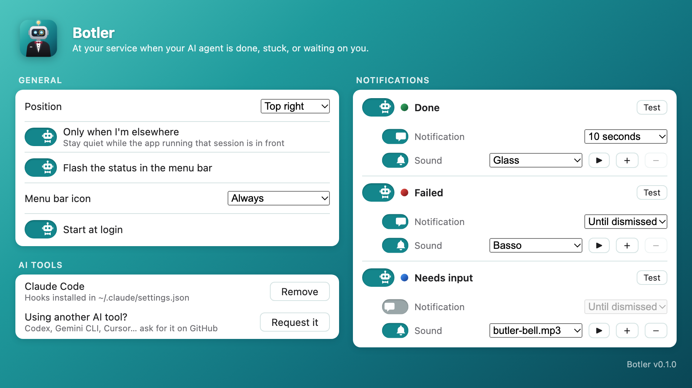

Claude is done
Go make coffee. The butler will call you.
Hooks in your AI coding tool tell Botler when a session finishes, fails or stops to ask you something. It slides a banner onto the screen you're working on, plays the sound you picked for that outcome and flashes the menu bar. Click the banner to jump straight back to the terminal or editor running that session.
> fix the flaky rate-limit test and open a PR ✻ All tests pass. I've pushed the branch and opened a draft PR.
Three outcomes
Green when Claude is done, red when a turn fails (rate limits, API errors), blue when it needs your permission or an answer. Switch each one off, or keep just its sound or just its banner, with its own sound and timing.
Click to jump back
The banner names the project and the app running the session. A click brings that terminal or editor to the front. Several sessions stack instead of overwriting each other.
Quiet when you're there
If you're already looking at the app running that session, nothing pops up. Successes fade after 10 seconds; failures and questions stay until you dismiss them.
Make it yours
Every event gets its own switches, sound and timing. Set it up once in Settings, then forget about it.

Pick what each event does
Switch Done, Failed or Needs input off entirely, or keep just the notification, just the sound, or both.
A sound per event
Choose any macOS system sound for each event and preview it with ▶. Hear the difference between “done” and “stuck” without looking.
Bring your own sounds
Add your own aiff, caf, m4a, mp3 or wav files with ＋. They show up under Custom for every event; remove them with －.
Stay as long as you like
Let a notification hide after 5, 10, 30 or 60 seconds, or keep it until you click it or press Esc.
Where you want it
Top right, top center, top left, bottom right or bottom left, always on the screen you're working on.
Quiet when you're watching
Skip notifications while the app running that session is already in front of you.
Menu bar your way
Show the icon always, only while notifying, or never, and choose whether it flashes Done, Error or Needs you.
Ready when you are
Start at login, and connect or disconnect each AI tool's hooks with one click.
Install
For macOS 12 or later. Botler currently works with Claude Code (StopFailure needs a recent version); ask for your tool if you use another.
-
Install the app
brew install --cask thewolfnl/tap/botler
This installs
Botler.appand thebotlercommand. -
Open it and install the hooks
On first launch Botler offers to add its hooks to
~/.claude/settings.json. Your other hooks and settings stay as they are, and you can add or remove the hooks from Settings at any time. Prefer the terminal?botler hooks install
This adds a
Stop,StopFailureandNotificationhook like the one below; new Claude Code sessions pick them up. The hook does nothing if the app has been removed. Turn on Start at login in Settings while you're there.~/.claude/settings.json"Stop": [{ "hooks": [{ "type": "command", "command": "[ ! -x \"/Applications/Botler.app/Contents/MacOS/botler\" ] || \"/Applications/Botler.app/Contents/MacOS/botler\" hook claude", "timeout": 10 }] }] -
Try it
botler notify done "Dinner is served" botler notify input "May I take your coat?" botler notify failed "We appear to be out of tea"
The app is ad-hoc signed, not notarized. The Homebrew cask clears macOS's quarantine flag so Gatekeeper lets it open.
Uninstalling? The hooks go quiet once the app is gone. To remove them from Claude Code's settings as well, run
botler hooks uninstall (or use Settings) first.Using another AI tool?
Botler talks to each tool through a small adapter that reads its hook events and installs its hooks. Claude Code is the first. If you use Codex, Gemini CLI, Cursor, Copilot CLI or something else, open an issue: say which tool, link its hooks or notification docs, and which of done, failed and needs input it can report.
Claude CodeSupported
Your tool hereRequest it
Changelog
Loading releases…